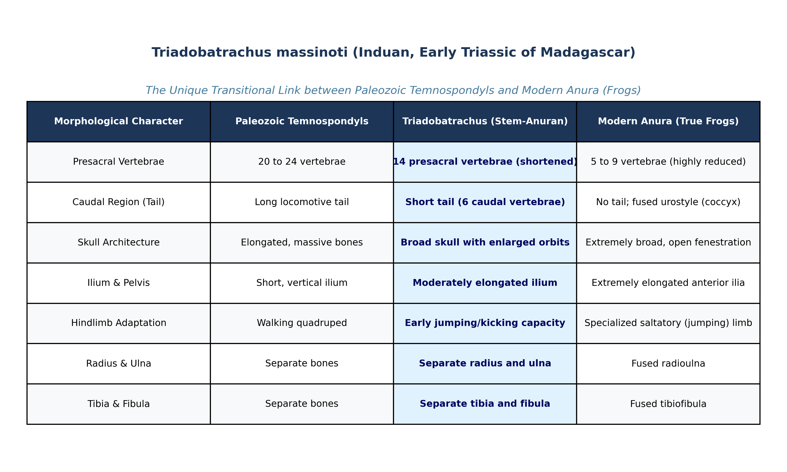

Modern amphibians (Lissamphibia) are subdivided into three living orders: Anura (frogs and toads), Caudata / Urodela (salamanders and newts), and Gymnophiona / Apoda (caecilians). While living frogs exhibit one of the most radically specialized, anatomically extreme body plans in the animal kingdom (saltatory jumping adaptation, tailless body, fused limb bones), their evolutionary origins remained an enigmatic phylogenetic puzzle for over a century.
The breakthrough came with the discovery of Triadobatrachus massinoti (described by Jean Piveteau in 1936; Michael J. Benton, Vertebrate Palaeontology, 4th ed., Chapter 4, pp. 102–105). Recovered from Early Triassic (Induan stage, ~250 Ma) marine shales near Diego Suarez in northern Madagascar, Triadobatrachus stands as the only known fossil that provides a definitive evolutionary link between any modern order (Anura) and Paleozoic amphibians (specifically the dissorophoid temnospondyls, such as Doleserpeton and Gerobatrachus).
Triadobatrachus exhibits an extraordinary mosaic of primitive Paleozoic labyrinthodont characters and derived modern anuran specializations:

Prompt: "The only fossil that provides a link beween any of the modern orders and Paleozoic amphibians is ________"
| Anatomical Trait | Paleozoic Temnospondyls (e.g., Doleserpeton) | Transitional Fossil: Triadobatrachus | Modern Anura (True Frogs) |
|---|---|---|---|
| Geological Age | Carboniferous–Permian (~300 Ma) | Early Triassic (~250 Ma) | Jurassic to Recent |
| Presacral Vertebrae | 20 to 24 (long, flexible trunk) | 14 vertebrae (moderately shortened) | 5 to 9 (severely shortened, rigid trunk) |
| Tail / Urostyle | Long swimming tail (numerous vertebrae) | Short tail (6 separate caudal vertebrae) | No tail; fused rod-like urostyle |
| Forearm (Radius & Ulna) | Separate radius and ulna | Separate radius and ulna | Fused radioulna |
| Shank (Tibia & Fibula) | Separate tibia and fibula | Separate tibia and fibula | Fused tibiofibula |
| Pelvic Ilium | Short, vertical, non-elongated | Moderately elongated anteriorly | Greatly elongated, forward-directed ilia |